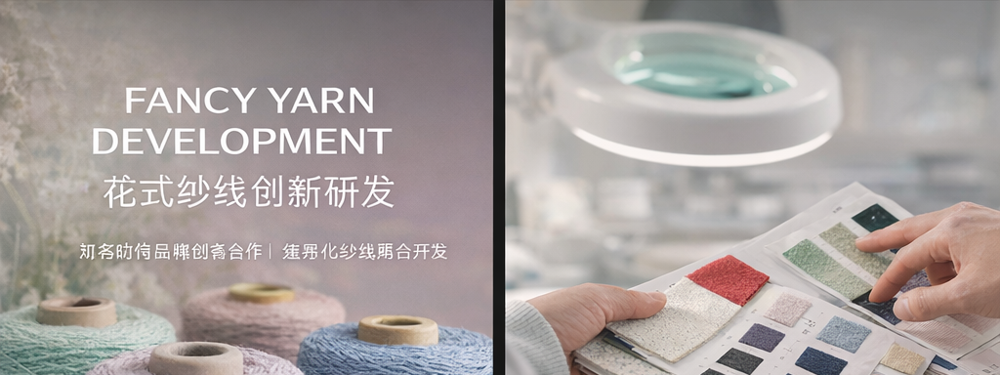

花式纱线创新研发 Fancy Yarn Development ファンシーヤーン開発
围绕结构、风合与视觉纹理进行差异化开发，输出可量产的材料方案。 Differentiated development across structure, hand-feel and texture—built for scale. 構造・風合い・テクスチャーを軸に差別化し、量産に落とし込める素材提案。
OTSU YAN
面向贸易商、工厂及服装/家纺品牌客户，提供稳定、透明、可追溯的纱线供货体验；支持现货供应、订单生产与特殊规格定制，并提供中/英/日多语对接，提升协作效率。 For traders, factories and fashion/home brands: stable, transparent and traceable yarn supply. In-stock delivery, made-to-order production, and bespoke specs—supported in CN/EN/JP. 商社・工場・ブランド向けに、安定・透明・トレーサブルな糸供給を提供。即納在庫・受注生産・特殊仕様にも対応し、中/英/日で円滑に連携します。
ABOUTABOUTABOUT
自 2004 年进入纱线行业以来，我们持续深耕花式纱线研发、高端品牌协同与供应链管理；以材料开发能力与稳定供给能力为核心，长期服务日本、欧洲及中国一线时尚品牌与制造合作伙伴。 Since entering the yarn industry in 2004, we have focused on fancy yarn R&D, premium-brand collaboration, and supply chain management—combining material development with reliable delivery for global partners. 2004年の参入以来、ファンシーヤーンの開発、高級ブランドとの協業、サプライチェーン管理を継続的に強化。素材開発力と安定供給を軸に、日欧中の主要パートナーを長期的に支えています。
PHILOSOPHYPHILOSOPHYPHILOSOPHY
结构定义质感。 质感定义风格。
我们用更安静、更确定的方式，把材料从概念带到量产。
Structure defines hand-feel. Hand-feel defines style.
Quietly engineered—reliably delivered from concept to scale.
構造が風合いを決める。 風合いがスタイルを決める。
静かに設計し、確実に量産へ落とし込む。
LOOKBOOKLOOKBOOKLOOKBOOK
以“系列专题”方式呈现核心业务：更易按季度替换图片与文案，长期维护也保持统一气质。 Series-based presentation—easy to refresh quarterly while keeping a consistent premium tone. シリーズ単位で運用し、季節ごとの差し替えも簡単。統一感ある上質さを保てます。
围绕结构、风合与视觉纹理进行差异化开发，输出可量产的材料方案。 Differentiated development across structure, hand-feel and texture—built for scale. 構造・風合い・テクスチャーを軸に差別化し、量産に落とし込める素材提案。
稳定交付、透明沟通与可追溯管理，提升执行确定性。 Stable delivery, transparent communication and traceability—reliable execution. 安定納品・透明なコミュニケーション・トレーサブル管理で実行確度を高めます。
支数、成分、捻度、染色与结构精细化对接，支持打样到量产一体化。 Counts, blends, twist and dyeing—aligned from sampling to bulk production. 番手・混率・撚り・染色・構造などを精緻に調整し、サンプル〜量産まで一貫対応。
联合设计师、院校与合作伙伴推进创意开发与落地，以稳定供给支撑持续创新。 Co-create with designers and institutes to turn ideas into scalable products. デザイナーや教育機関と共創し、アイデアを量産可能な形へ。安定供給で継続的な革新を支えます。
EXPERTISEEXPERTISEEXPERTISE
以“研发导向 + 稳定供应 + 跨语协同”为主轴，将材料方案、项目执行与交付确定性统一到同一套工作逻辑中。 R&D-driven + reliable supply + multilingual collaboration—one workflow from material planning to delivery certainty. 「開発主導 × 安定供給 × 多言語連携」を軸に、素材提案から納品確度まで一貫した運用で支えます。
花式纱线研发与技术导向；支持从概念到打样的材料路线设计。Fancy yarn R&D and technical direction—from concept to sampling route.ファンシーヤーン開発と技術設計。コンセプト〜サンプルまでの素材設計を支援。
稳定交付与透明沟通；强调里程碑与可追溯管理。Stable delivery and transparent communication with traceable management.安定納品と透明な連携。マイルストーンとトレーサブル管理を重視。
中/英/日对接；减少信息损耗，提高跨团队协作效率。CN/EN/JP support to reduce information loss and improve coordination.中/英/日での連携により、情報ロスを抑え協業効率を向上。
20+ years
CN/EN/JP
R&D × Supply
CONTACTCONTACTCONTACT